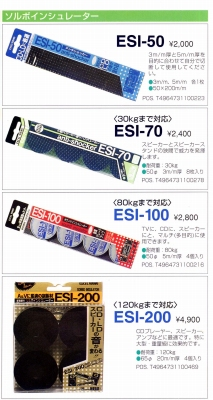
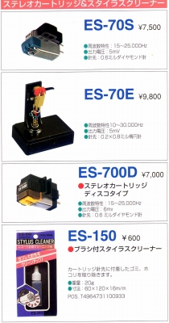

EXCEL カタログギャラリー
(カタログ画像をクリックすると原寸大のPDFファイルが開きます）
�@年代不明 アクセサリーカタログ
収録されたアクセサリーからみて1990年代前半頃のもの？

（以前は結構使われたソルボのインシュレーター）

（伝統のES-70シリーズのカートリッジがまだ残っていた）
�A（番外）海外版総合カタログ
収録機種のうち、アナログ関連機器のいくつかは国内での販売が確認できたが、
ヘッドフォンについては不明である。掲載機種から1980年代のものと推定。なお連絡先の電話番号（東京23区内）の市外局番が3桁なので、その点からも、1991年より前だとわかる。
エクセルのページへ